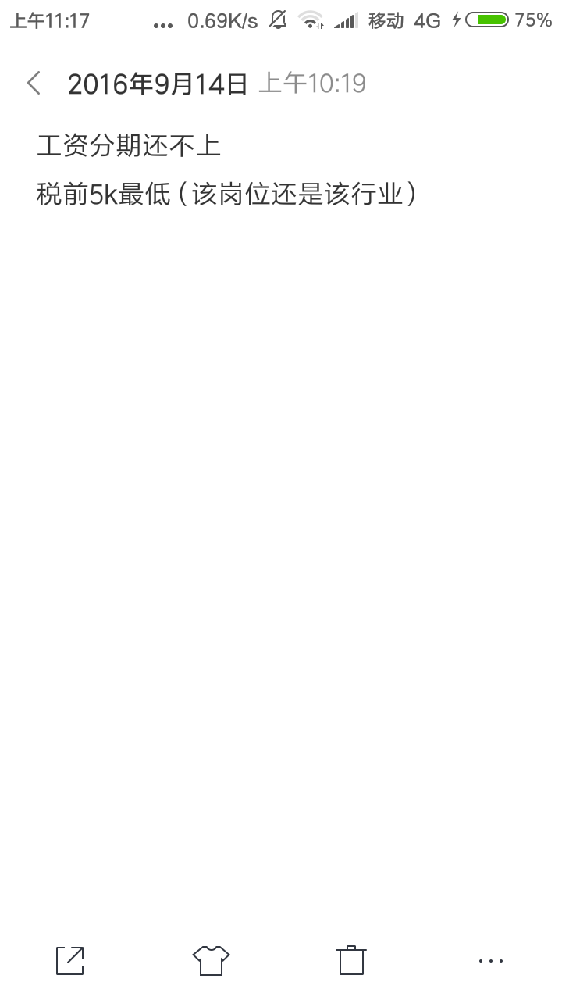
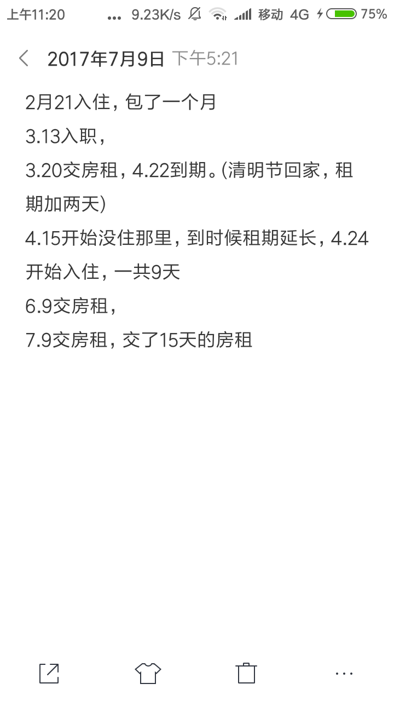

转行整整一年了...
当时为什么转行
16年6月刚毕业后进入社会，没有一技之长的我一直在做销售，各种各样的销售，最开始的电话销售然后是一家互联网公司的市场专员再然后是推荐保健品的，最后从链家离职后就决定不再从事销售了。
转行互联网自学？or培训？
或许是因为知乎刷多了？感觉互联网工资很高的样子(其实大牛的工资确实很高，不过似乎每个行业都是这样啊？…)然后就开始加各种技术群，当时还不知道程序员里面分很多语言和方向，就加了很多Java群(原谅我刚开始只知道Java…)，知道了还有培训这个东西，然后去人才市场找互联网相关工作的时候遇到了两个培训机构(ps:现在很多鸡贼的培训机构都打着招聘的名义在招学员)在招聘学员，去他们公司面试(其实是忽悠我去培训)
的时候知道了原来还有这样的操作？3个月的培训就可以月薪过万了？回家的路上想了想

发现其实他们画的饼太不真实了，于是就开启了自学之路。
为什么选择做前端，而不是后端呢？
看到一个博客里面很有意思的话，感觉也挺符合我的情况，就拿过来了。
不是我选择了前端，而是前端选择了我。天降大任，身不由己。
17年10月底从链家辞职，然后回老家开启自学，首先去淘宝买了一大波培训班的Java视频自己在家跟着视频码代码，学了大概2个多月的样子然后过完年就去了苏州开始了找工作之路。
最开始是直接在智联招聘和拉钩上海投简历，发现基本都被回绝了。然后我就有了一个大胆的想法…由于我以前做过推销的工作我感觉是不是也可以像推销产品一样推销自己，于是我就在招聘网站上搜薪资要求2-3k的工作记下工作地点每天坐车上门去求面试机会。嗯，毫无悬念，虽然有了面试机会不过水平太菜了根本不能胜任工作…
转机发生在2月20号，这天我像往常一样去人才市场看工作机会，突然看到了网页制作这个岗位，或许我可以曲线入行？先找个互联网工作然后每天下班自学新技术再跳槽？于是和这家公司hr谈了下…然后说明天就可以来上班了，不过有试用期，试用期内需要完成2个企业站并且试用期内是没有工资的。然后就这样入了前端的坑。

职业发展
在一家公司待的久了，发现技术上没有挑战性且薪水也不是很高的时候就可以选择跳槽了。2月21正式入行前端(其实只能叫切图仔)，大概做了十来个企业站后发现技术上已经没有可以学习的地方了于是在17年7月24提出离职，回到了老家在老家找了份前端工作。由于第一份工作是纯静态页面，刚入职第二家公司的时候如果没有师傅带着真的会走很多弯路，感谢一路走来遇到的两位带我的师傅，清楚了职业规划后，要做的就是不停的学习补充新知识。(希望可以早点从小切图仔蜕变为大前端)